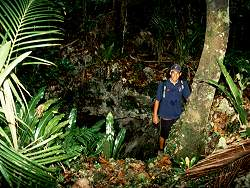

Anatakitaki
Cave of the Kopekas
Useful Information
| Location: | Atiu Island |
| Open: |
no restrictions. [2008] |
| Fee: |
free. [2008] |
| Classification: |
 Karst cave Karst cave
|
| Light: | bring torch |
| Dimension: | L=~1,000m |
| Guided tours: | |
| Photography: | |
| Accessibility: | |
| Bibliography: | |
| Address: | |
| As far as we know this information was accurate when it was published (see years in brackets), but may have changed since then. Please check rates and details directly with the companies in question if you need more recent info. |
|
History
Description
|  |
| Image: The collapse entrance of the Anatakitaki.
© George Szentes, with kind permission. |
One of the longest and most spectacular caves of the four islands is to the south-east of Atiu, Anatakitaki or the Cave of the Kopekas. This is a large solution cave, a series of large chambers and corridors, with an estimated length of 1 km. A fresh-water lake can be found at the bottom of the cave. The cave itself has a collapsed entrance. Out of this entrance several collapses open to the jungle, where vegetation penetrates into the cave. An especially nice view is of the dangling lianes, the "bell-pulls".
 |
| Image: Drawing of a Kopeka.
© George Szentes, with kind permission. |
The cave is very nicely decorated with white stalactites, stalagmites and flowstones. The rich and colourful speleothems are typical phenomena of tropical cave development. As a consequence of the relatively shallow and strongly fissured rock layer above the cave, roots of various dimensions have broken through. Some of the roots have also penetrated the speleothems.
The Kopeka are tiny birds, very much like swifts, which nest in huge numbers inside the cave. When they come out to hunt insects they are never seen landing. They only rest in the cave. Inside, in the darkness, they make a continuous chattering, clicking noise, which they use to find their way around. (Like bats, but the bat sounds, of course, cannot be heard by the human ear.)
Text from George Szentes (2004): Caves of the Cook Islands, The British Caver Vol. 127 Spring 2005, pp 1-12, 13 color pictures, 1 bw picture, 1 map. With kind permission of the author.
The Latin name of the Kopeka or Aitu swiftlet is Aerodramus sawtelli. It is endemic on the island and of great interest to biologists.

|
| Anatakitaki Gallery |
{kind=link}
{kind=link}
{kind=link}
{kind=link}
{kind=link}
{kind=link}
{kind=link}
{kind=link}
- See also
 Search Google for "Anatakitaki"
Search Google for "Anatakitaki"